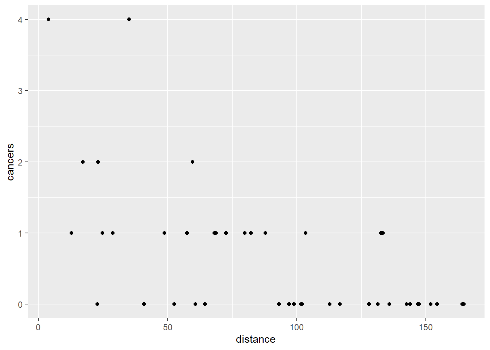

Chapter 9 Single continuous predictor
9.1 Introduction to the example
The number of cases of cancer reported by a clinic and its distance from nuclear plant were recorded . cases.txt. The researchers wanted to know if proximity to the nuclear power plant altered the risk of cancer. Note this is poor epidemiology is there would be very many other factors influencing the incidence and reporting of cancer cases.
| cancers | distance |
|---|---|
| 0 | 154.37 |
| 0 | 93.14 |
| 4 | 3.83 |
| 0 | 60.83 |
| 0 | 142.61 |
| 0 | 164.72 |
| 0 | 135.92 |
| 1 | 79.92 |
| 0 | 112.71 |
| 0 | 101.76 |
| 2 | 59.62 |
| 0 | 128.07 |
| 2 | 17.17 |
| 1 | 24.81 |
| 1 | 103.42 |
| 0 | 112.70 |
| 0 | 143.96 |
| 1 | 48.77 |
| 1 | 82.20 |
| 1 | 57.53 |
| 1 | 12.75 |
| 0 | 64.47 |
| 1 | 68.78 |
| 1 | 133.40 |
| 0 | 98.94 |
| 0 | 40.87 |
| 0 | 151.82 |
| 4 | 35.15 |
| 0 | 97.10 |
| 0 | 131.44 |
| 0 | 102.02 |
| 0 | 116.77 |
| 1 | 28.79 |
| 0 | 52.63 |
| 2 | 23.15 |
| 1 | 68.13 |
| 0 | 146.93 |
| 1 | 87.98 |
| 0 | 147.30 |
| 1 | 132.67 |
| 0 | 164.21 |
| 1 | 72.67 |
| 0 | 22.81 |
There are 2 variables: the response, cancers, is the number of cancer cases reported at a clinic and distance, gives the clinic’s distance from the nuclear plant.
We will import the data with the read_table2() function and plot it with ggplot().
# a default scatter plots of the data
ggplot(data = cases, aes(x = distance, y = cancers)) +
geom_point()
9.2 Applying and interpreting glm()
mod
#
# Call: glm(formula = cancers ~ distance, family = poisson, data = cases)
#
# Coefficients:
# (Intercept) distance
# 1.0192 -0.0215
#
# Degrees of Freedom: 42 Total (i.e. Null); 41 Residual
# Null Deviance: 54.5
# Residual Deviance: 31.8 AIC: 78.2The fact that the estimate for distance (1.019) is negative tells us that as distance increases, the number of cancers reported goes down.
These estimates are on the scale of the link function, that is, they are logged (to the base e, natural logs) in this case.
To understand the on the scale of the response we apply the inverse of the \(ln\) function, the exp() function
\(\beta_{0}\) is labelled “(Intercept)” and \(\beta_{1}\) is labelled “distance”. Thus the equation of the line is:
The model predicts there will be 2.771 cancers at a clinic at no distance from the power plant.
Recall that for a linear model with one predictor, the second estimate is the amount added to the intercept when the predictor changes by one value. Since this is glm with a log link, the value of 0.979 is amount the intercept is multiplied by. Thus the model predicts there will be 2.771 \(\times\) 0.979 = 2.712 cancers 1 km away and 2.771 \(\times\) 0.979 \(\times\) 0.979 = 2.654 cancers 2 km away. That is: \(\beta_{0}\) \(\times\) \(\beta_{0}^n\) mm at \(n\) km away.
You can work these out either by exponentiating the coefficients and then multiply the results as above or by adding the coefficients and exponentiating
# 1km away
exp(b0) * exp(b1)
# (Intercept)
# 2.71
# 2km away
exp(b0) * exp(b1) * exp(b1)
# (Intercept)
# 2.65
# 10km away
exp(b0) * exp(b1) * exp(b1)^10
# (Intercept)
# 2.19# 1km away
exp(b0 + b1)
# (Intercept)
# 2.71
# 2km away
exp(b0 + b1 + b1)
# (Intercept)
# 2.65
# 10km away
exp(b0 + 10*b1)
# (Intercept)
# 2.23summary(mod)
#
# Call:
# glm(formula = cancers ~ distance, family = poisson, data = cases)
#
# Deviance Residuals:
# Min 1Q Median 3Q Max
# -1.842 -0.744 -0.483 0.421 1.893
#
# Coefficients:
# Estimate Std. Error z value Pr(>|z|)
# (Intercept) 1.01917 0.30871 3.30 0.00096 ***
# distance -0.02150 0.00503 -4.27 2e-05 ***
# ---
# Signif. codes: 0 '***' 0.001 '**' 0.01 '*' 0.05 '.' 0.1 ' ' 1
#
# (Dispersion parameter for poisson family taken to be 1)
#
# Null deviance: 54.522 on 42 degrees of freedom
# Residual deviance: 31.790 on 41 degrees of freedom
# AIC: 78.16
#
# Number of Fisher Scoring iterations: 5To get a test of the model overall
anova(mod, test = "Chisq")
# Analysis of Deviance Table
#
# Model: poisson, link: log
#
# Response: cancers
#
# Terms added sequentially (first to last)
#
#
# Df Deviance Resid. Df Resid. Dev Pr(>Chi)
# NULL 42 54.5
# distance 1 22.7 41 31.8 1.9e-06 ***
# ---
# Signif. codes: 0 '***' 0.001 '**' 0.01 '*' 0.05 '.' 0.1 ' ' 19.3 Getting predictions from the model
The predict() function returns the predicted values of the response. To add a column of predicted values to the dataframe:
we need to specify they should be on the scale of the responses, no the link function scale.
cases$pred <- predict(mod, type = "response")
mod$fitted.values
# 1 2 3 4 5 6 7 8 9 10 11
# 0.1004 0.3742 2.5519 0.7495 0.1292 0.0803 0.1492 0.4972 0.2457 0.3109 0.7692
# 12 13 14 15 16 17 18 19 20 21 22
# 0.1766 1.9157 1.6256 0.3000 0.2458 0.1255 0.9713 0.4734 0.8046 2.1067 0.6931
# 23 24 25 26 27 28 29 30 31 32 33
# 0.6317 0.1575 0.3304 1.1510 0.1060 1.3016 0.3437 0.1643 0.3092 0.2252 1.4923
# 34 35 36 37 38 39 40 41 42 43
# 0.8939 1.6846 0.6406 0.1178 0.4181 0.1168 0.1600 0.0812 0.5811 1.6970This gives predictions for the actual x values used. If you want predicts for other values of x you need to creating a data frame of the x values from which you want to predict